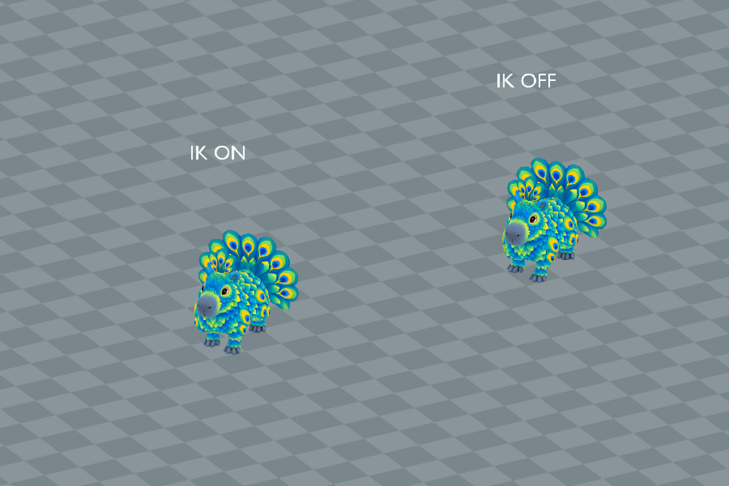

Animation previews, videos and model downloads are retained locally and are not hosted on this website. Text, assessments and still images remain available.
Jungle Wilds / Creature profile
Peacobara
Endangered
Perspective modelling reference · Open image for full size
About Peacobara
Shimmering teal, emerald and blue feathers cover Peacobara's rounded body and gentle face. It moves with quiet composure, occasionally opening a splendid tail fan patterned with golden eyespots.
One active creature total: following or mounted. Choosing another replaces the current creature.
Hatch bonuses
First hatch: +5,000 Running XP and $500,000 Cash. Later hatches: +500 Running XP (10%), with no further discovery Cash.
One first-hatch award per player and species, shared across qualities and sizes. The certificate shows both credited amounts with the skill icon. Fixed amounts are independent of XP boosts. All hatch bonuses
Assigned game stats. The current creature model is installed alongside its existing egg and named wild spawning. Gameplay acceptance and developer review remain separate.
2 November 2026: Peacobara's 24-bone rig now has stable knees, correct body lowering and green eyelids matched to its feathers. Its existing Jungle egg and statistics are retained. Five current GIF/MP4 previews and actual Roblox Studio Edit images are below. Shown body previews score 8.5/10; Blink scores 7.5/10. Full movement remains quality-pending for turn sliding and transitions. The in-game board reads WIP / To review. Daniel review and live acceptance remain separate. Earlier notes: Egg availability release, 29 October 2026: the existing species egg is enabled in its assigned biome with all shiny finishes and the existing labelled missing-model hatchling. Real creature modelling, rigging and animation remain pending. Live gameplay and real storage acceptance remain pending. Historical design notes: Revised on 26 October 2026: the entire coat is peacock feathers, with no fur. The face retains capybara anatomy in the same teal, blue, emerald and gold palette as the plumage. Keep the crest, four capybara feet and large peacock tail fan. Game stats, earnings and creature model remain to be decided. Biome assignment approved by Daniel on 27 October 2026. This is a design assignment; live spawn pools are unchanged. Matching egg artwork and a local textured prototype mesh were prepared on 27 October 2026. Creature stats, spawn integration, Studio import and live acceptance remain pending.
Parent reference masses: Peacock (4.00 kg) and Capybara (50.50 kg). Parent reference sizes: Peacock: 0.9 m (body length excluding train); Capybara: 1.2 m (body length). Pet weight uses the retained species calibration multiplied by relative height and relative front-to-back length. Both dimensions scale together, so individual mass still scales quadratically. Length includes the tail and uses installed model depth normalized to standard height; it is an extent, not a curved body measurement. One stud is exactly 0.28 metres. Low-bodied parents use body length; the other recorded heights and bird body lengths are size proxies. These are game balance references, with range midpoints and explicit estimates rather than measured population means. Pet height is base height times its internal scale, with no four-stud floor or extra quality height bonus. Pet kg uses scale squared. Egg kg is the base creature kg times scale, and base egg dimensions multiply directly by scale. See the scale tables for the quality bands.
A Standard pet at internal scale 1 hatches at 3.8 studs (1.064 m) and 30.70 kg. The base statistics describe catalogue dimensions at scale 1.
Egg
Base height
2.464 studs
Base weight
30.70 kg
The egg and creature share one internal scale. Egg kg is the base creature kg times scale. All base egg dimensions multiply directly by scale, and quality chooses the scale band.
Installed Roblox model
Studio Edit / Idle pose. This is the installed creature in Roblox Studio. Live gameplay acceptance remains separate.
No usable rig/clip set is available. Apply land Walk/Run after anatomy is known unless the creature is confirmed flying-only or swimming-only.
Open a clip to play its GIF. Playback starts on request so the rest of the page stays still.
These are local model renders. They do not establish live gameplay acceptance.
Idle
4 seconds / 25 fps / 0 studs/s / 3.5 studs tall / Current native payload and packed runtime curves rendered locally / Recorded 2026-11-01T23:03:33.909359+00:00 / Runtime playback
Earlier Codex review: 8.5/10
Earlier version / At 0 studs/s / 2026-11-01T23:03:33.909359+00:00
Four rounded paws support the body while a small breath, head motion and delayed fan and crest sway keep the feathered silhouette alive. Stable knee poles remove the old rotation flips. The green eyelids now follow the surrounding feather colour.
Retained earlier assessment. The current source needs a new review; this number does not approve the changed version.
Local runtime-equivalent render, not actual Roblox video. Native materials and poses are independently captured in the Studio Edit images.
Live gameplay, navigation, multiplayer and mobile acceptance remain separate.
Known lateral sliding during tight turns and small transient floor intrusion remain in the production-controller probe. The full import stays quality-pending.
Walk
2.8 seconds / 30 fps / 1.1 studs/s / 3.5 studs tall / Current native payload and packed runtime curves rendered locally / Recorded 2026-11-01T23:03:33.909359+00:00 / Runtime playback
Earlier Codex review: 8.5/10
Earlier version / At 1.1 studs/s / 2026-11-01T23:03:33.909359+00:00
At 1.1 studs/s, the staggered four-foot cycle keeps a quiet body and clear paw recovery. Corrected knee directions and retained body lowering remove the old snapping and floaty playback. Straight travel reads cleanly; the separate production-controller schedule still has lateral sliding on tight turns.
Retained earlier assessment. The current source needs a new review; this number does not approve the changed version.
Local runtime-equivalent render, not actual Roblox video. Native materials and poses are independently captured in the Studio Edit images.
Live gameplay, navigation, multiplayer and mobile acceptance remain separate.
Known lateral sliding during tight turns and small transient floor intrusion remain in the production-controller probe. The full import stays quality-pending.
Run
2.1 seconds / 40 fps / 16 studs/s / 3.5 studs tall / Current native payload and packed runtime curves rendered locally / Recorded 2026-11-01T23:03:33.909359+00:00 / Runtime playback
Earlier Codex review: 8.5/10
Earlier version / At 16 studs/s / 2026-11-01T23:03:33.909359+00:00
At 16 studs/s, the short-contact gallop and airborne recovery clearly differ from Walk, with the broad fan following the body. Stable poles remove the earlier large knee flips. The marked-ground preview is usable, but the production-controller probe still finds turn sliding and about 0.016 studs of transient penetration at base size. Full movement acceptance remains pending.
Retained earlier assessment. The current source needs a new review; this number does not approve the changed version.
Local runtime-equivalent render, not actual Roblox video. Native materials and poses are independently captured in the Studio Edit images.
Live gameplay, navigation, multiplayer and mobile acceptance remain separate.
Known lateral sliding during tight turns and small transient floor intrusion remain in the production-controller probe. The full import stays quality-pending.
Swim
4 seconds / 30 fps / 5 studs/s / 3.5 studs tall / Current native payload and packed runtime curves rendered locally / Recorded 2026-11-01T23:03:33.909359+00:00 / Runtime playback
Earlier Codex review: 8.5/10
Earlier version / At 5 studs/s / 2026-11-01T23:03:33.909359+00:00
At 5 studs/s, the paired fore and hind paddles use separate rhythms under a buoyant body, with restrained crest and fan lag. The feet, face and feather pattern remain coherent. The dry review ground shows travel and scale; it does not establish water physics or live turning.
Retained earlier assessment. The current source needs a new review; this number does not approve the changed version.
Local runtime-equivalent render, not actual Roblox video. Native materials and poses are independently captured in the Studio Edit images.
Live gameplay, navigation, multiplayer and mobile acceptance remain separate.
Known lateral sliding during tight turns and small transient floor intrusion remain in the production-controller probe. The full import stays quality-pending.
Blink
1.2 seconds / 50 fps / 0 studs/s / 3.5 studs tall / Current native payload and packed runtime curves rendered locally / Recorded 2026-11-01T23:03:33.909359+00:00 / Runtime playback
Earlier Codex review: 7.5/10
Earlier version / At 0 studs/s / 2026-11-01T23:03:33.909359+00:00
The sampled green covers match the eye feathering and fully close and reopen over the original artwork. Current native images verify the corrected colour and closure. The small rounded covers and straight line remain simple, with the unchanged fit also checked at half and triple size.
Retained earlier assessment. The current source needs a new review; this number does not approve the changed version.
Local runtime-equivalent render, not actual Roblox video. Native materials and poses are independently captured in the Studio Edit images.
Live gameplay, navigation, multiplayer and mobile acceptance remain separate.
Known lateral sliding during tight turns and small transient floor intrusion remain in the production-controller probe. The full import stays quality-pending.
Simple rounded single-colour covers; the review uses open holds around the short production closure.
Full movement acceptance remains pending for tight turns and transitions.
2 November 2026: Peacobara's 24-bone rig now has stable knees, correct body lowering and green eyelids matched to its feathers. Its existing Jungle egg and statistics are retained. Five current GIF/MP4 previews and actual Roblox Studio Edit images are below. Shown body previews score 8.5/10; Blink scores 7.5/10. Full movement remains quality-pending for turn sliding and transitions. The in-game board reads WIP / To review. Daniel review and live acceptance remain separate.
Download every action
Action downloads
Peacobara action files
Action
GIF
MP4
Idle
Walk
Run
Swim
Blink
Native foot-planting trial
2 November 2026. Rejected prototype, not installed. 7.5/10, Needs work. Body animations require 8.5/10.
Planted sole drift falls from about 0.428 to 0.0065 studs during the sampled turn. The largest recorded release step rises from 0.356 to 0.496 studs and small sole intrusion remains. Walking contact is promising, but the release still needs smoothing and this trial is below the 8.5 body threshold.
Local replay of actual native Play bone-world samples, resampled at 15 FPS. Body skin and source colour only; facial cosmetic parts, native PBR lighting and physics are omitted. This is not a Play screen recording. Walking speed: 1.1 studs/s, at 3.5 studs height. Replay is 15 FPS.
View the recorded Walk and turn comparison

| |
The six-creature desktop fixture used two of each species. Median whole-frame time was about 16.71 ms with IK disabled and 16.74 ms enabled. Median measured script body-update time rose from about 0.711 to 0.785 ms. These small isolated samples do not establish mobile or multiplayer cost.
Normal gameplay was left unchanged. Smoother world-space lift-off and recovery, high-speed actions, transitions, terrain and production-driver integration still require verification. No new current-animation pass or developer vote was assigned.
Recorded parent height and weight
These are the exact reference inputs used for this creature. Some are range midpoints or explicit estimates, rather than measured population averages. Height and body length are labelled separately.
Scroll the table sideways on a narrow screen.
Parent inputs and their arithmetic averages. Select a linked value to open its recorded source.
Indian peafowl reported average mass 4 kg; the body-length reference excludes decorative train feathers.
Midpoint of 35 to 66 kg and reported approximate 1.2 m body length.
(Parent 1 size + Parent 2 size) / 2
How the weight was recorded
Indian peafowl reported average mass 4 kg; the body-length reference excludes decorative train feathers.
Midpoint of 35 to 66 kg and reported approximate 1.2 m body length.
(Parent 1 kg + Parent 2 kg) / 2
Check the calculation at scale 1
Average parent size
(0.9 + 1.2) / 2 = 1.05 m
Average parent weight
(4 + 50.5) / 2 = 27.25 kg
Chosen game height
3.8 studs x 0.28 = 1.064 m
Parent-derived creature weight
27.25 x (1.064 / 1.05)^2 = 27.981511111111 kg
Game balance multiplier
1x; 27.981511111111 x 1 = 27.981511111111 kg (historical parent baseline)
Retained height-only calibration
27.981511111111 kg
Length correction
27.981511111111 x 4.169142857143 / 3.8 = 30.699715047619 kg
Catalogue creature weight
30.69971504762 kg
Base egg height, 50/50 blend
1.8 x sqrt((3.8 / 4) x (30.69971504762 / 4)^(1/3)) = 2.464034021429 studs
Matches the recorded averages and catalogue weight.
Game height is chosen for the creature design; it is not the average parent height. Individual pet height and length both multiply by saved scale. Weight uses their product, so uniform scaling remains quadratic. Values above are displayed to twelve decimal places; calculations use the full recorded values.
Scale, egg weight and carrying impact
These ranges use the actual quality bands and shared creature scale. Most rolls are near the midpoint.
Computed ranges at each quality. Carry speed is a percentage of normal movement before other modifiers.
Base rates are per second for a creature placed at Home. Eggs still incubating and creatures in inventory do not earn. Currency starts at $0. Hatched pets placed in your Home garden pay into your wallet every second while you are online. The currency is Cash. Normal income scales with saved size and quality: Standard 1x, Fine 2x, Superior 4x, Epic 8x and Legendary 16x. Followers do not earn garden income; active petting temporarily gives the petted creature 3x. See Game mechanicsXP and skill levels for the full rules. Grim Peeper pets earn $10 per second.
Reviewed
Reviewed means Daniel has reviewed the in-game model and animations and is happy with them.
Daniel tells Codex when he approves how a model looks and works. Codex records Daniel's approval and updates this shared site. Reviewed shows a tick when Daniel is happy with the in-game model and animations.
✗ Not reviewed
Daniel: ✗ Pending
Earlier egg-only or local-candidate review note is historical. Saved developer decisions are unchanged.
Species egg, five quality appearances, icons and biome spawning installed. Hatching uses the missing-model character. Real creature modelling, rigging, animations and Daniel approval remain pending.
Pet icon
The face icon used in the game. Labraduck also represents the Pets menu.
Collection artwork
Full-body artwork and its matching silhouette, prepared at 256 by 256 pixels for the Pets collection.